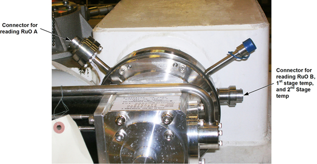

Operating Documentation
Direction 5670000, Rev# 1
Module Version 2.0, Version Date 2/4/10
Operating Documentation |
| Condition | Reference | Effectivity |
|---|---|---|
Removal of some magnet enclosure components may be required to complete Temperature Sensor Checks. Refer to the following document and the appropriate Service Methods documentation (available through the Common Documentation Library at gehealthcare.com or your local GE Healthcare Service Representative) before continuing with Temperature Sensor Checks if cover removal is required. | - |
| ||||
| RuO Temperature Monitor readings will increase slightly if the meter is cold. For best results the meter should be at or near room temperature. | ||||
Attach either cable of Portable RuO Temperature Monitor 2171219 to the CAL receptacle located on the upper left side of the monitor as shown below.
Press the [Push To Read] button. The reading for the first cable should be 3.95K to 4.05K.
Attach Portable RuO Temperature Monitor's other cable to the CAL receptacle.
Press the [Push To Read] button. The reading for the second cable should be 3.95K to 4.05K.
| ||||
| Strong Magnetic Field! | ||||
| Ferrous materials can become dangerous projectiles in the presence of the magnetic field Produced by the Signa Magnet. | ||||
| The RuO Temperature Monitor contains ferrous materials. Keep the meter away from the magnet bore. |
Place the RuO Temperature Monitor on the magnet's left hand (service) side, close enough to the Coldhead for the monitor's cables to reach the Coldhead's connection ports.
Run the two cables up to the Coldhead box and attach the cables as shown in Illustration 1, connecting to the Coldhead and Recondenser Connection Ports shown below.
Read the Recondenser temperature:
Rotate the switch on the RuO Temperature Monitor to the Recondenser position.
Depress the [Push To Read] button.
Let the readings stabilize for 10 seconds, then record the reading.
To read Recondenser temperature:
| NOTE: | Since this reading will vary slightly, record the average of the high and low readings. |
Rotate the switch to the Coldhead position, then depress the [Push To Read] button.
Let the readings stabilize for 10 seconds and record the reading.
Wait a few minutes, then depress the [Push To Read] button again.
Let the readings stabilize for 10 seconds.
Average the first and second Coldhead readings.
Use a DVM with 10 microamp or less current supply to minimize I2 R heating of the RuO.
Connect a DVM to the appropriate Recondenser contacts shown in Illustration 3 and the appropriate Coldhead contacts shown in Illustration 4. RuO locations are shown in Illustration 5.
Check for isolation of contacts A, B, C and D to the cryostat ground.
Check the resistance between contacts A and C: ohms (A,C) = ______, and between contacts B and D: ohms (B,D) = ______. This is the resistance of the phosphor bronze wire loop to the RuO.
Check resistance between A and B: ohms (A,B) = ______, and between C and D: ohms (C,D) = ______.
Calculate RuO Resistance:
When troubleshooting thermal issues on magnets, use of the MTM-101 meter is mandatory. Measurements made with the MagMon 3 are not accurate enough. There are two connection points to take measurements (see Illustration 6):
Coldhead – This point allows the measurement of RuO A (also known as the second-stage coldhead temperature).
Recondenser – This point allows the measurement of:
RuO B (also known as the recondenser temperature)
Shield temperature diode (also known as the first stage coldhead temperature)
Second-stage coldhead temperature
Illustration 6: Connection Points for Temperature Measurements

Connect the meter to a measurement point.
Press the green button on the meter until the LED on the meter indicates the meter is measuring the temperature it is supposed to measure. The table below shows how the LED indicates which temperature is being measured.